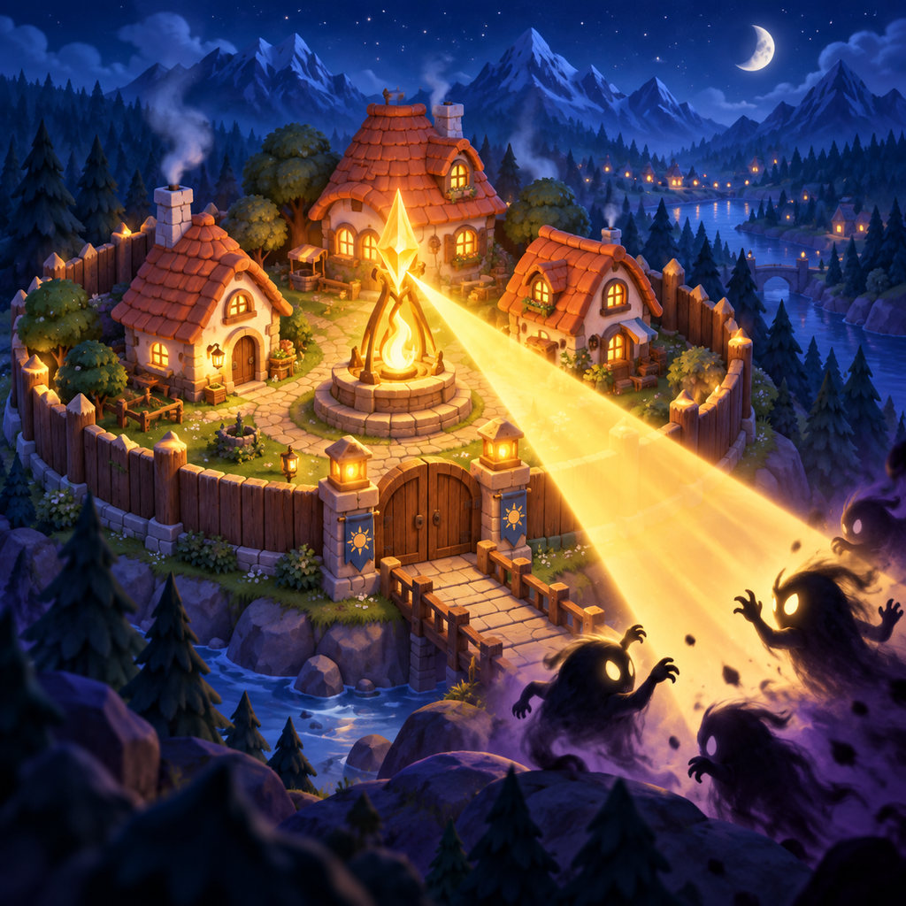

Fortify your village
Expand the bottom panel by day. Repair a wall or upgrade a building. You have one building action per in-game day — choose it before nightfall.
A light for your village
Guide the light. Strengthen the walls. Look after your villagers. And whenever you need a hand, we are here.

Getting started
Expand the bottom panel by day. Repair a wall or upgrade a building. You have one building action per in-game day — choose it before nightfall.
Touch and drag on the play area. Herd enemies towards torches and towers. Release to refill oil; save a flare for when danger closes in.
Use the magnifier or pinch to zoom by day. Tap a building to learn its role. The “?” button opens the guide; the menu leads to the bestiary.
Common questions
Quests unlock from night 4. A new one arrives once per real calendar day, at local midnight. Playing another in-game night does not change it. Tap the card for full details and its next refresh time; the X collapses the summary.
They appear by day after a few quiet seconds, including at normal zoom. Close the guide or building description and keep part of the village visible above the bottom panel. Villagers stay quiet during camera gestures and night battles.
Yes. Core gameplay works offline on iPhone and iPad. Purchases, restoring purchases and optional ads need internet. Villages do not automatically sync between devices.
Open the menu → Settings → Save → Copy save code. Keep the code somewhere safe and use Load save code on your other device. Import replaces the current village. Save codes do not transfer Premium; restore it through the App Store. Copy your save before deleting the app.
The menu → Settings contains the one-time Premium purchase and Restore purchases. Use the same Apple Account you purchased with and an internet connection. Premium adds eligible bonuses without watching ads, a daily streak shield, an ember beam colour and decorative statue plinths. Reward conditions and limits still apply. The App Store offer displays the price; there is no subscription.
Availability depends on your connection, region, privacy choices and ad supply. You can keep playing without ads. Ad privacy options appear in Settings when the privacy provider requires that form to be available.
The first arrives on night 10, followed by a boss every 5 nights. There are five boss types, growing stronger as you progress. Their abilities are described in the bestiary.
Notifications are optional. Disable them in the game's Settings or your device's notification settings for Glowhold. This does not limit gameplay.
Contact the developer
Tell us what happened, including your device model, iOS/iPadOS version, game version and night number. A screenshot helps; never send your Apple password or payment details.
kontakt@sowerit.plPaweł Smoczyński · Sower IT
Support in English and Polish.